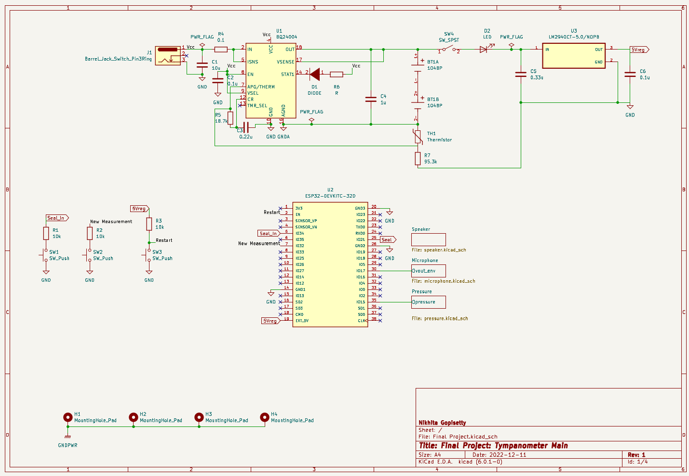
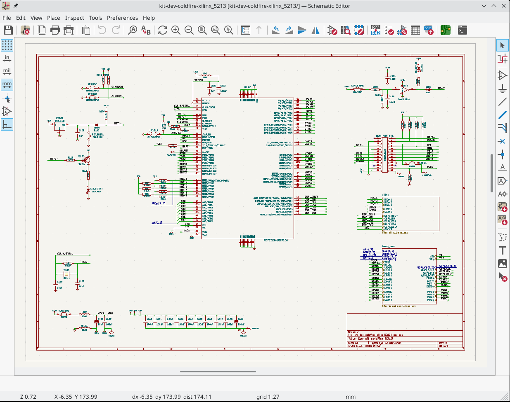
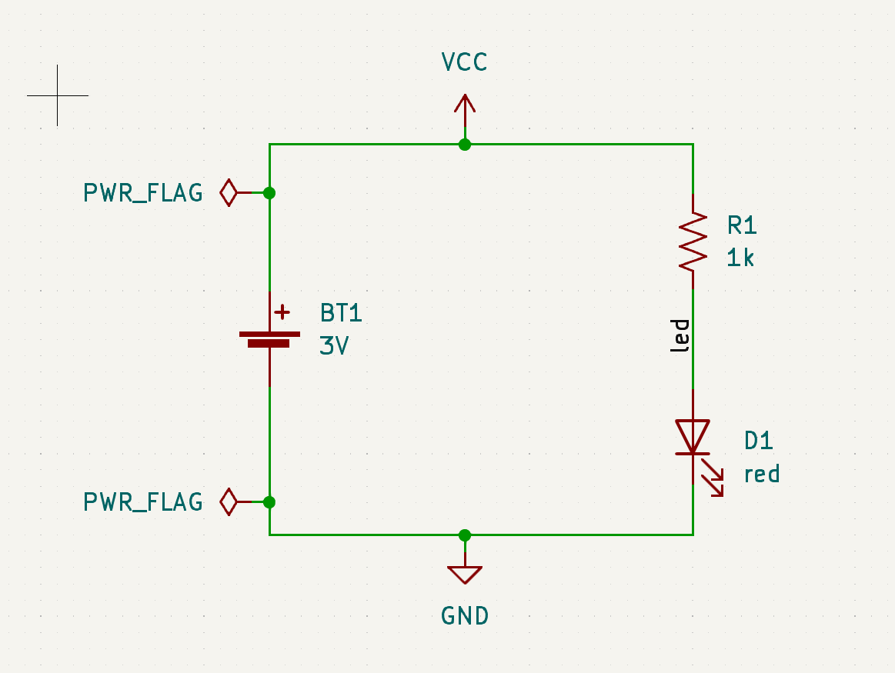

ECAD using KiCad: Schematic Capture
BME253L - Fall 2025
Why EDA?
- Formally capture circuit schematics
- Validate circuit behavior (Electrical Rules Check)
- SPICE (Simulation Program with Integrated Circuit Emphasis) simulations
- Convert circuit to printed circuit board (more space efficient and permanent than a breadboard).
- Capture design history and facilitate rapid iteration.
- Generate 3D “parts” to integrate with CAD.
KiCad

- https://kicad.org
- A completely open-source alternative to Eagle.
- Just as capable as Altium Designer (to a point); similar workflow.
Schematic Capture

UI/UX

Creating a Schematic
KiCad Documentation: Schematic Editing Operations
- Create a
New Project, which creates a schematic file. - DO NOT CHANGE THE GRID SPACING!!
- Setup
Page Settings... - Configure
Schematic Setup... - Place component / part (
Place Symbol) using default library. If component doesn’t exist, then you either need to:- Import Parts into Libraries
- Download the part from an online database (e.g., SnapEDA)
- Create part using the
Library Editor.
Assigning Properties to Components
- Annotate components togive each component a unique label (e.g., \(R_1\), \(R_2\))
Tip
This is now done automatically in KiCad 8.x, but you may want to manually override some of the annotation defaults.
- Assign component values (SI units)
- Label nets with meaningful names
- Nets are like nodes; common voltage connections.
- Use net labels to avoid connection chaos.
In-Class Exercise: Part I
Let’s create a simple voltage divider circuit…
Power Ports
- Power ports, including ground references, are also global net labels.
- Component pins can be explicitly designated power in/out (in contrast to signal).
- Power, ideally, cascades top-to-bottom (
+\(\rightarrow\)GND[\(\rightarrow\)-]) on the schematic.
In-Class Exercise: Part II
Let’s add power ports…
Electrical Rules Check (ERC)
- Check the validity of the schematic
- Common error message:
“Input Power pin not driven by any Output Power pins”
- KiCad checks to make sure that power can “drive” components that demand that input.
- You can explicitly indicate this in the schematic using the
PWR_FLAGsymbol attached to the net in question. - Might need to re-map pin types (
Properties:Edit Symbol:Pin Table).

Best Practices
- Signal, ideally, flows left-to-right (input \(\rightarrow\) output).
- Outline and label functional blocks. Use
Heirarchical Sheetsto organize more clearly-defined sub-circuits. - Can include non-electrical items, like
Mounting Holes. - Add Test Pins/Pads to nets you will want to verify during testing.
- Power nets
- Signal I/O
- Use
No-Connectionflags for pins that are intentionally not connected to other components.